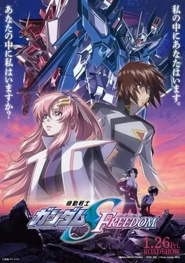

The genetics
Genetic engineering is at the heart of the Gundam SEED universe, built around genetically enhanced humans, the Coordinators, and the hostility of groups such as Blue Cosmos towards them. This film adds the Accords, a new race of enhanced Coordinators with high intelligence and telepathic powers that let them read and manipulate minds. They were created by Aura Maha Khyber, a former genetic researcher who became Foundation's queen, with Gilbert Durandal and Lacus's mother as co-researchers according to the Japanese source; Lacus and Orphee were designed as a pair destined to rule mankind. Foundation's aim is a version of the Destiny Plan, a eugenic social order in which genes decide each person's role and the Accords rule as a superior class, and it pursues it through deception, nuclear terror and mass murder. The heroes answer with freedom and love: Lacus, herself a product of the programme, refuses the destiny written in her genes. Telepathy cannot be engineered, but the film's warning about genetic determinism and designed elites is a classic theme.
How genetics is portrayed
- Overall portrayal of genetics
- negative Genetic design is presented as the basis of a tyrannical, eugenic order, opposed by heroes who choose freedom and love over genetic destiny.
- Outcome of the genetic intervention
- negative The designed elite's bid for power leads to nuclear destruction of a capital, the destruction of Moscow and a war; Lacus, a product of the programme, rejects her designed role.
- Aura Maha Khyber
- villain Aim: ideological, power (negative). The former Mendel genetic researcher created the Accords and, as queen of Foundation, uses them to impose a Destiny Plan in which a genetically designed elite rules mankind, through nuclear terror and deception; her flagship is destroyed.
- Foundation's Accords (Orphee Lam Tao and the Black Knights)
- villain Aim: power, ideological (negative). The genetically designed rulers and soldiers use their engineered telepathy to manipulate Kira and seize power, and Orphee claims Lacus as his designed partner; they are defeated and Orphee concedes.
The story
In this anime film, a sequel to the Gundam SEED series, the world peace organisation Compass, led by Lacus Clyne with Kira Yamato as its commander, fights the remnants of the anti-Coordinator terrorist group Blue Cosmos. The new Kingdom of Foundation, ruled by Queen Aura Maha Khyber and Prime Minister Orphee Lam Tao, proposes a joint operation but betrays Compass: its elite Black Knights telepathically manipulate Kira, nuclear missiles destroy Foundation's own capital to frame Eurasia, and Lacus is taken to Foundation's space base. Athrun Zala reveals that Aura, Orphee and Lacus belong to the Accords, a new race of enhanced Coordinators, and that Orphee and Lacus were genetically designed to rule mankind together under a version of the Destiny Plan, which assigns everyone a role according to their genes. Foundation destroys Moscow with the Requiem superweapon and demands that the world accept the plan. Lacus rejects Orphee, and Kira, Athrun and their allies defeat Foundation; Lacus and Kira choose each other over their designed destinies.